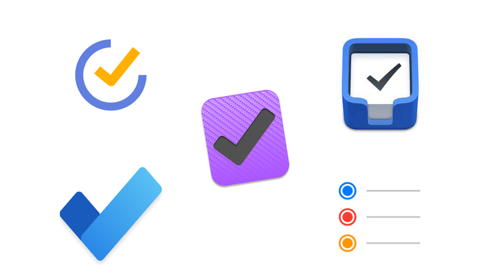

STPMS
Smart Task & Productivity Management System

This is one of my most important academic and technical projects. It is a Java-based desktop productivity application focused on task management, deadlines, priorities, subtasks, and productivity support through structured software design.
- Focus: Java, MySQL, layered architecture
- Type: Academic and portfolio project
- Category: Backend-oriented application design